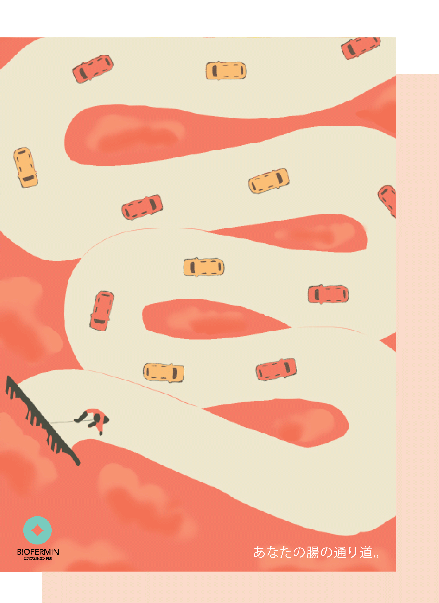
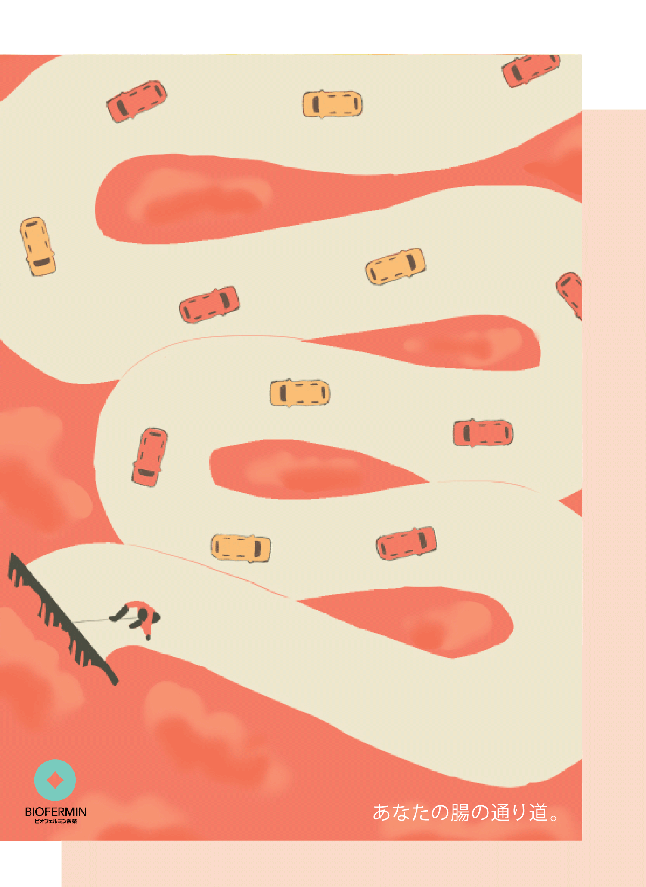

Bubble gum
子供や大人までをターゲットとしたお菓子なので、全体的に楽しいイメージにしました。お菓子の箱を開ける時のワクワクした感じが伝ってくるような、明るくてかわいらしいデザインです。
宝石の不思議な世界へ・・・
誕生石の万華鏡を見ることができるカレンダーを作りました。万華鏡を見ていると次はどんな模様になるかワクワクして不思議な気持ちになりませんか？キラキラした宝石が毎日に彩りを与えてくれるカレンダーです。
実はクマノミが絶滅の危機！？
水に関わる絶滅危惧種を選んで見開きの雑誌を制作しました。私はクマノミを選びました。タイトルは「僕をひとりにしないで...」です。普段群れで行動しているクマノミから連想してこのタイトルにしました。
メインビジュアルはインパクトのあるクマノミの泣き顔を大きく表示しました。絵本のような印象のあるイラストを制作しin designで構成から全て制作しました。
雑誌表紙イラスト
水に関わる絶滅危惧種を選んで見開きの雑誌を制作し、表紙も担当しました。水をモチーフにした少し寂しげのある雰囲気で制作しました。
 

あなたの腸の通り道
第90回毎日広告デザインに応募した作品です。課題はビオフェルミン製薬を選びました。腸の通りをよくするというイメージから車の交通を想像しその道を掃除することで渋滞を無くすという意味を込めて制作しました。
プチ・ボヌール
小さな幸せを香りと共に
紅茶缶のラベルをデザインしました。茶葉に花びらを混ぜたフレーバードティーという設定です。プチ・ボヌールはフランス語で「小さな幸せ」という意味です。ロゴは花びらをイメージしました。

スタジオ・エーワン株式会社
長期インターンシップでパッケージのデザインを制作しました。実際に自分の考えたパッケージ案が採用されました！